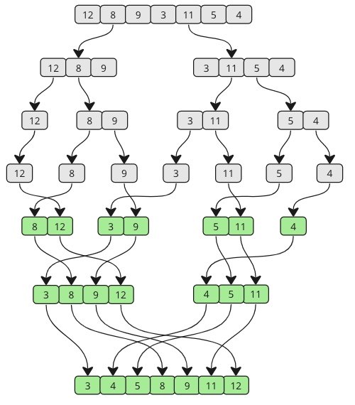

Last class: the IDEA behind executors and futures.
Today: actually use them, parallelize merge sort, and learn why shared data is dangerous.
Tasks: [t1] [t2] [t3] [t4] [t5] [t6] ↓ ↓ ↓ Pool: [Worker1] [Worker2] [Worker3] ??? ??? ???
.done(), .result(), as_completed()).You want to fetch 3 URLs and collect their responses.
def fetch(url): time.sleep(1) # Simulate network call return f"{url}: 200 OK" # We want to call fetch() on 50 URLs in parallel # and collect all 50 results.
import threading, time def fetch(url): time.sleep(1) return f"{url}: 200 OK" # This return value goes... where? t = threading.Thread(target=fetch, args=("a.com",)) t.start() result = t.join() print(result) # None! thread.join() does NOT return the function's result.
fetch() returns "a.com: 200 OK". But t.join() gives us None. How do we get the result?results = [] # Shared list def fetch(url): time.sleep(1) results.append(f"{url}: 200 OK") # Can't return — must append to shared list threads = [threading.Thread(target=fetch, args=(url,)) for url in ["a.com", "b.com", "c.com"]] [t.start() for t in threads] [t.join() for t in threads] print(results) # Order is random. No error handling. Ugly.
Executors solve this. They're not just about reusing threads — they give you results back:
• executor.submit(func, args) → returns a Future (a handle to the result)
• executor.map(func, iterable) → returns results directly, in order
executor.submit() — One Task, One FutureSubmit a task. Get a Future back. Check it, wait for it, get the result.
from concurrent.futures import ThreadPoolExecutor import time def fetch(url): time.sleep(2) return f"{url}: 200 OK" with ThreadPoolExecutor(max_workers=3) as executor: # submit() returns a Future IMMEDIATELY future = executor.submit(fetch, "https://api.razorpay.com") print(future.done()) # False — still running result = future.result() # BLOCKS until done, returns value print(future.done()) # True — finished! print(result) # "https://api.razorpay.com: 200 OK"
future.result() before the task finishes?.result() = "give me the answer, I'll wait." Use .result(timeout=5) to wait max 5 seconds (raises TimeoutError if not done).def broken(): raise ValueError("oops") future = executor.submit(broken) future.result() # ???
try: result = future.result() print(f"Success: {result}") except ValueError as e: print(f"Task failed: {e}") # "Task failed: oops"
• executor.submit(func, *args) → returns a Future immediately
• future.done() → True/False (non-blocking check)
• future.result() → blocks until done, returns value or re-raises exception
• future.result(timeout=N) → wait max N seconds, raises TimeoutError
executor.map() — Same Function, Many InputsWhen you have one function and a list of inputs, map() is cleaner than multiple submit() calls.
from concurrent.futures import ThreadPoolExecutor import time def fetch(url): time.sleep(1) return f"{url}: OK" urls = [f"api.com/{i}" for i in range(10)] # map() = submit all + collect results in ORDER with ThreadPoolExecutor(max_workers=5) as executor: results = executor.map(fetch, urls) for r in results: print(r) # Results in SUBMISSION order (not completion order) # 10 tasks, 5 workers, 1s each → ~2 seconds total
map() vs submit()map() when:
• Same function, list of inputs
• You want results in input order
• Simple pipeline — "run this on all of these"
# Parallel list comprehension for r in executor.map(fetch, urls): print(r) # in order
submit() when:
• Want results fastest-first (as_completed)
• Different functions in one pool
• Per-task error handling or timeouts
• Need to cancel tasks
# Different functions in one pool
f1 = executor.submit(fetch_user, uid)
f2 = executor.submit(fetch_orders, uid)
f3 = executor.submit(compute_recs, uid)
• Both map() and submit() solve the "threads can't return values" problem
• map() = parallel list comprehension. Same function, many inputs, ordered results.
• submit() = task orchestration. Different functions, fastest-first, per-task control.
• Mental model: if map() feels limiting, switch to submit()
download(url) for each.# map: one line results = list(executor.map(download, urls)) # submit: more boilerplate for the same thing futures = [executor.submit(download, u) for u in urls] results = [f.result() for f in futures]
fetch_profile(), fetch_orders(), send_notification().# submit: different functions in one pool f1 = executor.submit(fetch_profile, user_id) f2 = executor.submit(fetch_orders, user_id) f3 = executor.submit(send_notification, user_id) profile, orders, notif = f1.result(), f2.result(), f3.result() # map: CAN'T do this — map takes ONE function only
# submit: handle each failure separately futures = [executor.submit(fetch, url) for url in urls] for f in futures: try: print(f.result()) except Exception as e: print(f"Failed: {e}") # other tasks keep going # map: exception breaks the iteration for result in executor.map(fetch, urls): print(result) # if url[3] fails, you get the exception HERE # and urls 4, 5, 6... are never printed # even though they succeeded!
First: what is merge sort. Then: can we parallelize it?

Key insight: The two halves are sorted independently. That means they can be sorted on different workers!
All 4 sort simultaneously (parallel!)
Interactive visualization: W3Schools Merge Sort →
Here's the merge sort code. How would you use a thread pool to sort chunks in parallel?
def merge_sort(arr): if len(arr) <= 1: return arr mid = len(arr) // 2 left = merge_sort(arr[:mid]) right = merge_sort(arr[mid:]) return merge(left, right) def merge(left, right): result, i, j = [], 0, 0 while i < len(left) and j < len(right): if left[i] <= right[j]: result.append(left[i]); i += 1 else: result.append(right[j]); j += 1 return result + left[i:] + right[j:] # Sequential: sort 4 chunks one by one data = [random.randint(0, 1_000_000) for _ in range(800_000)] chunks = [data[i::4] for i in range(4)] sorted_chunks = [merge_sort(c) for c in chunks]
with ThreadPoolExecutor(4) as ex: ex.submit(merge_sort, chunks[0]) ex.submit(merge_sort, chunks[1]) ex.submit(merge_sort, chunks[2]) ex.submit(merge_sort, chunks[3]) # Where are the results?
map(): sorted_chunks = list(ex.map(merge_sort, chunks))merge_sort) on each chunk. Should we use map() or submit()?map() is cleaner here. Let's see:map()from concurrent.futures import ThreadPoolExecutor with ThreadPoolExecutor(max_workers=4) as executor: sorted_chunks = list(executor.map(merge_sort, chunks)) # Merge all sorted chunks back together result = sorted_chunks[0] for c in sorted_chunks[1:]: result = merge(result, c)
submit() instead of map()?# Using map() — simpler with ThreadPoolExecutor(max_workers=4) as executor: sorted_chunks = list(executor.map(merge_sort, chunks)) # Using submit() — more explicit with ThreadPoolExecutor(max_workers=4) as executor: futures = [executor.submit(merge_sort, c) for c in chunks] sorted_chunks = [f.result() for f in futures]
map() is cleaner here since it's one function on many inputs.
from concurrent.futures import ProcessPoolExecutor with ProcessPoolExecutor(max_workers=4) as executor: sorted_chunks = list(executor.map(merge_sort, chunks)) # Same code! Just ThreadPoolExecutor → ProcessPoolExecutor # Sequential: 1.20s # ThreadPool: 1.19s (GIL blocks) # ProcessPool: 0.42s (2.9x faster!)
Speedup = 1 / (S + P/N)
S = sequential fraction (merge step), P = parallel fraction (sort step), N = workers
Sort = 90% of time (parallelizable). Merge = 10% (sequential, can't be split).
| Workers (N) | Calculation | Speedup | Efficiency |
|---|---|---|---|
| 1 | 1 / (0.1 + 0.9/1) | 1.0x | baseline |
| 2 | 1 / (0.1 + 0.9/2) | 1.8x | good — nearly 2x |
| 4 | 1 / (0.1 + 0.9/4) | 3.1x | good — but not 4x |
| 8 | 1 / (0.1 + 0.9/8) | 4.7x | diminishing — 8 workers, only 4.7x |
| 16 | 1 / (0.1 + 0.9/16) | 6.4x | diminishing — 16 workers, only 6.4x |
| 100 | 1 / (0.1 + 0.9/100) | 9.2x | almost at ceiling |
| ∞ | 1 / (0.1 + 0) | 10x | THE CEILING — can never exceed this |
That 10% sequential part (merge) caps you at 10x forever, no matter how many workers you throw at it. Going from 4 to 100 workers only gains you 3x more speedup (3.1x → 9.2x). The first few workers give the biggest bang.
The lesson: Before adding more workers, ask: "Can I reduce the sequential portion?" Making more of your code parallelizable gives bigger gains than adding more cores.
Start simple. No threads. Just add and subtract the same number of times.
balance = 0 def add(n): global balance for _ in range(n): balance += 1 def subtract(n): global balance for _ in range(n): balance -= 1 add(1_000_000) subtract(1_000_000) print(f"Balance: {balance}") # ???
Now run add() in one thread and subtract() in another:
import threading balance = 0 def add(n): global balance for _ in range(n): balance += 1 def subtract(n): global balance for _ in range(n): balance -= 1 t1 = threading.Thread(target=add, args=(1_000_000,)) t2 = threading.Thread(target=subtract, args=(1_000_000,)) t1.start(); t2.start() t1.join(); t2.join() print(f"Expected: 0") print(f"Actual: {balance}")
"But the GIL only lets ONE thread run Python at a time! How can two threads corrupt data?"
GIL prevents PARALLEL execution. It does NOT prevent CONTEXT SWITCHING.
The OS can switch from Thread A to Thread B in the middle of balance += 1. The GIL just ensures only one runs at any instant — but "which one" changes constantly.
balance += 1 looks like 1 operation. But Python compiles it to multiple bytecodes: LOAD_GLOBAL balance ← READ from memory LOAD_CONST 1 BINARY_ADD ← ADD STORE_GLOBAL balance ← WRITE back to memory A context switch can happen BETWEEN any of these steps.
See how any language compiles to instructions: Compiler Explorer (godbolt.org) →
Step Thread A (add) Thread B (subtract) balance ───── ──────────────────────── ──────────────────────── ─────── 1 READ balance = 5 5 ╔════ CONTEXT SWITCH ════╗ 2 READ balance = 5 5 3 SUBTRACT 1, WRITE 4 ╚════ CONTEXT SWITCH ════╝ 4 ADD 1, WRITE 6 ! Thread A still had the old value (5). Writes 6. Thread B's subtraction (→ 4) was OVERWRITTEN. Lost.
Before learning the fix, learn to IDENTIFY the problem.
A critical section = a piece of code that accesses shared data and MUST NOT be interrupted. If two threads run it simultaneously, data gets corrupted.
Your job: identify the critical section, then protect ONLY that part.
balance = 0 def deposit(amount): global balance balance += amount # Line A
global statement itself doesn't modify anything.inventory = {"biryani": 10}
def place_order(dish):
if inventory[dish] > 0: # Line A: check stock
time.sleep(0.01) # Line B: simulate processing
inventory[dish] -= 1 # Line C: reduce stock
return "Order placed"
return "Out of stock"
time.sleep(0.01) / processing) runs while holding the lock. Other threads wait during that processing time for nothing. Over-locking kills concurrency.users = {}
def register(username, email):
if username not in users: # Line A: check exists
log(f"Registering {username}") # Line B: log (slow: writes to file)
users[username] = email # Line C: create user
send_welcome(email) # Line D: send email (slow: 200ms)
Only ONE thread can hold the lock at a time. Others wait.
Bathroom has a lock. One person enters, locks. Others wait. Done? Unlock. Next person.
Mutex = that lock. Only one thread in the critical section at a time.
acquire() and release()import threading balance = 0 lock = threading.Lock() def add(n): global balance for _ in range(n): lock.acquire() # Lock — others wait balance += 1 lock.release() # Unlock — next thread can enter def subtract(n): global balance for _ in range(n): lock.acquire() balance -= 1 lock.release()
lock.acquire() but never calls lock.release()?release() is critical. But what if your code crashes between acquire and release?acquire() and release()?with lock: — auto-releases even on exceptions. Same context manager pattern we've used with with open("file"), with ThreadPoolExecutor().with lock:import threading balance = 0 lock = threading.Lock() def add(n): global balance for _ in range(n): with lock: # acquire + guaranteed release balance += 1 def subtract(n): global balance for _ in range(n): with lock: balance -= 1 t1 = threading.Thread(target=add, args=(1_000_000,)) t2 = threading.Thread(target=subtract, args=(1_000_000,)) t1.start(); t2.start() t1.join(); t2.join() print(f"Expected: 0") print(f"Actual: {balance}") # Exactly 0! Every time!
with lock: — what pattern is this? Where have you seen it?with you've used is the same pattern:with open("file") as f: — auto-closes filewith ThreadPoolExecutor() as ex: — auto-shuts down poolwith lock: — auto-releases lock
Mutex is a universal concept used everywhere concurrent access exists:
• Databases: Row-level locks, table locks, SELECT ... FOR UPDATE — all mutexes
• Operating Systems: File locks, kernel mutexes for device access
• Java: synchronized keyword is a mutex
• Go: sync.Mutex
• Redis: Distributed locks (SETNX) — mutex across multiple servers
The concept is the same everywhere: only one can enter at a time. The syntax differs.
• Mutex (Mutual Exclusion) = lock allowing only ONE thread/process in a critical section
• Critical section = code that reads+writes shared data, must not be interrupted
• Python: lock = threading.Lock() → with lock:
• GIL ≠ thread safety. GIL prevents parallel execution but NOT context switching
• Lock the minimum necessary — over-locking kills concurrency
• Mutex is universal: databases, OS, Java, Go, Redis all use the same concept
Locks fix race conditions. But what if two threads each wait for the other's lock?
A waits for B. B waits for A. Neither moves. Forever.
Two people meet in a narrow hallway. Each steps to the same side to let the other pass. They step again — same side. Again. Again. Both stuck, endlessly mirroring each other.
Or:
User 1: locks Seat 3 ✓ wants Seat 6 → WAITS (User 2 has it) User 2: locks Seat 6 ✓ wants Seat 3 → WAITS (User 1 has it) DEADLOCK! Different locking order = circular wait.
import threading, time lock_A = threading.Lock() lock_B = threading.Lock() def user1_books(): with lock_A: # Gets lock A print("User 1: got seat A") time.sleep(0.1) # Tiny delay with lock_B: # Wants lock B → WAITS (User 2 has it) print("User 1: got seat B") def user2_books(): with lock_B: # Gets lock B print("User 2: got seat B") time.sleep(0.1) # Tiny delay with lock_A: # Wants lock A → WAITS (User 1 has it) print("User 2: got seat A") t1 = threading.Thread(target=user1_books) t2 = threading.Thread(target=user2_books) t1.start(); t2.start() # HANGS FOREVER. Both threads waiting for each other.
Animated explanation: Concurrency Visualized (YouTube Playlist) →
import threading, time locks = {"A": threading.Lock(), "B": threading.Lock()} def book_seats(user, seat1, seat2): # ALWAYS lock in sorted order — prevents deadlock! first, second = sorted([seat1, seat2]) with locks[first]: print(f"{user}: got seat {first}") time.sleep(0.1) with locks[second]: print(f"{user}: got seat {second}") print(f"{user}: booking complete!") # Both users lock A first, then B — no deadlock! t1 = threading.Thread(target=book_seats, args=("User 1", "A", "B")) t2 = threading.Thread(target=book_seats, args=("User 2", "B", "A")) t1.start(); t2.start() t1.join(); t2.join() print("Done! No deadlock.")
User 1 wants A, B → sorted: A, B → locks A first, then B.
User 2 wants B, A → sorted: A, B → locks A first, then B.
Same order = no circular wait = no deadlock. This works for any number of resources.
Can't always prevent deadlocks? Detect and recover.
lock.acquire(timeout=5) — try for 5 seconds. If can't get the lock, give up and retry.
The thread releases what it holds, waits a random time, tries again. Like backing off in a hallway when two people meet.
import threading, time, random lock_A = threading.Lock() lock_B = threading.Lock() def book_with_retry(user, first_lock, second_lock): while True: first_lock.acquire() if second_lock.acquire(timeout=0.1): # Try for 0.1s print(f"{user}: got both locks!") second_lock.release() first_lock.release() return else: first_lock.release() # Give up, release, retry time.sleep(random.uniform(0, 0.1)) # Random backoff print(f"{user}: couldn't get both, retrying...")
Most operating systems (Linux, Windows, macOS) simply IGNORE deadlocks.
Why? Deadlock detection and prevention have overhead. If deadlocks are rare (which they are in practice), the cost of preventing them exceeds the cost of occasionally rebooting.
This is called the "Ostrich Algorithm" — stick your head in the sand and pretend it doesn't exist.
Yes, you've experienced this. Ever had your computer freeze and nothing responds? That could be a deadlock. The "fix" = force-restart.
• Your phone app hanging — you kill it from task manager. OS doesn't fix it, YOU do.
• Database locks timing out — PostgreSQL uses timeouts (recovery), not prevention. You see ERROR: deadlock detected in logs.
• Print spooler stuck — Windows print service deadlocks are so common that "restart print spooler" is a meme.
The OS could detect and break deadlocks automatically, but the overhead of constantly checking EVERY lock in EVERY process would slow down the entire system. Deadlocks are rare enough that rebooting is cheaper.
Homework challenge — think about this for next class:
You're building a money transfer system. transfer(from_account, to_account, amount) needs to lock both accounts.
Thread 1: transfer(Alice, Bob, 100) — locks Alice, then Bob
Thread 2: transfer(Bob, Alice, 50) — locks Bob, then Alice
How would you prevent deadlock here? Come with your answer next class.
| Strategy | How | Used by |
|---|---|---|
| Prevention | Consistent lock ordering (sorted). Eliminate circular wait. | Application code, databases |
| Recovery | Timeouts + retry with backoff. Detect and break the cycle. | Databases (lock timeout), distributed systems |
| Ignorance | Do nothing. Reboot if stuck. Rare enough to not be worth the overhead. | Linux, Windows, macOS |
• Deadlock = two+ threads each waiting for a lock the other holds. Both wait forever.
• Prevention: always acquire locks in a consistent order (sort by ID/name)
• Recovery: use lock.acquire(timeout=N), release and retry with random backoff
• Ignorance: most OSes use the "ostrich algorithm" — deadlocks are rare, rebooting is cheaper than prevention overhead
• 4 conditions for deadlock: mutual exclusion, hold-and-wait, no preemption, circular wait. Break ANY one to prevent deadlock.
| Today | Next Class | After That |
|---|---|---|
| Executors, Mutex, Deadlock | Semaphores & more patterns | Async I/O (asyncio) |
| Mutex = 1 thread at a time | Semaphore = N threads at a time | Single-threaded concurrency |
Mutex allows 1 thread. What if you want exactly 3 (like 3 database connections)? That's a semaphore. Also: the homework answer for the transfer deadlock.